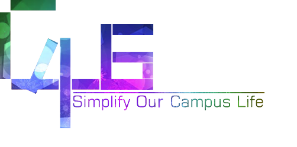

改善校园信息服务
关于Caμs开放平台
Created by 夏雨 计科20

校园内的信息服务
- 校园网
- 信息门户
- 网络学堂
- 图书馆
过于独立
同样的账号需要登录多次
如果可以一站式访问？
似乎At Tsinghua已经做了
但我们所想到的
不只这些
信息需要主动索取
需要时刻记着去信息门户看看公告
需要时刻记着去信息门户看看公告
说不定交换的机会就在这惊鸿一蹩
网络学堂
需要主动去看公告
需要主动点到课程里面去看公告、文件、作业、作业和作业
需要主动点到作业里面去看还没到的deadline、马上就到的deadline和已经过去的deadline
如果...
要是能有一个地方可以无差别地浏览各门课的新鲜事
有一个东西可以实时提醒你有某门课出现了动静
而这个东西可以放在手机上！源源不断地推送提醒
生活该多么美好
我们所想到的
不只这些
你自己的信息
还有更多的价值
例如
课表可以同步到日历，不再依赖导出的Excel表格
例如
根据上课地点安排行程，在校内导航
例如
将你的成绩信息，更加直观地展示。一键计算GPA，走势、分布一目了然
例如
根据你之前选过的课，为你推荐可能感兴趣的课
我们所想到的
还不只这些
多人的信息
聚合之后无限可能
例如
想蹭某门课而找不到教室？
有人选了这门课，同意将信息共享出来，你便可以知道
例如
想选某门课但担心给分不令人满意，作业压力大？
有人上过这门课，同意将成绩信息匿名参与统计，
你便有了真实的参考
例如
你想知道还有谁在和你上同一门课，你想知道坐在你附近的Ta是谁？
同意将信息共享，这一样可以实现
例如
你并不知道最近的讲座、活动信息
有人看到了，同意将信息共享，你便知道了
我们所想到的
仍然不只这些
多重信息的价值
在于可以产生更多的信息
例如
使用校园网账号接入Evernote.
某一门课上的同学一起在同一个本子上记笔记，共同完成思维导图，效果也许超过课堂的讲义
例如
不知道晚饭该吃什么？
人们对菜品拍照、打分、评论，做成清华的“大众点评”
例如
做社工常常要群发消息，短信很贵，微信不方便，很头疼？
和校园网账户对应的消息机制大概可以解决这个问题
甚至
如果和人人、微博等社交网络结合会怎样？
以课程建立群组，推荐相同爱好、相同社团的人互为好友？在提问下面自动@可能相关的人？
我们所想到的
真的还不只这些
也许校园生活应该
更有趣些？
考了满分？修了一门很虐的课？
连续吃了一周的麻辣香锅？
一口气跑了10圈？
想晒/想自黑？
也许我们可以
把成就系统变成现实
基于地点的社交、基于事件的社交很火？
在朋友之间的游戏排名相当吸引人？
这些只是我们想到的
那我们没想到的呢？
做出各种各样的零件
不如做出生产零件的机床
所以
我们将想法留给大家
我们完成的，
只是上述种种应用在技术上的
基础，搭建一个平台
只是上述种种应用在技术上的
基础，搭建一个平台
- 关联校园账户、
- 管理用户信息、
- 严格的隐私访问限制，
- 还有更多
任何人都可以改善校园信息服务
想法在这里可以很容易地实现
目前我们已经和网络中心达成合作
官方的数据源将为创意提供源源不断的动力
前方的路还很长
愿未来的校园生活将着你我之颜色
